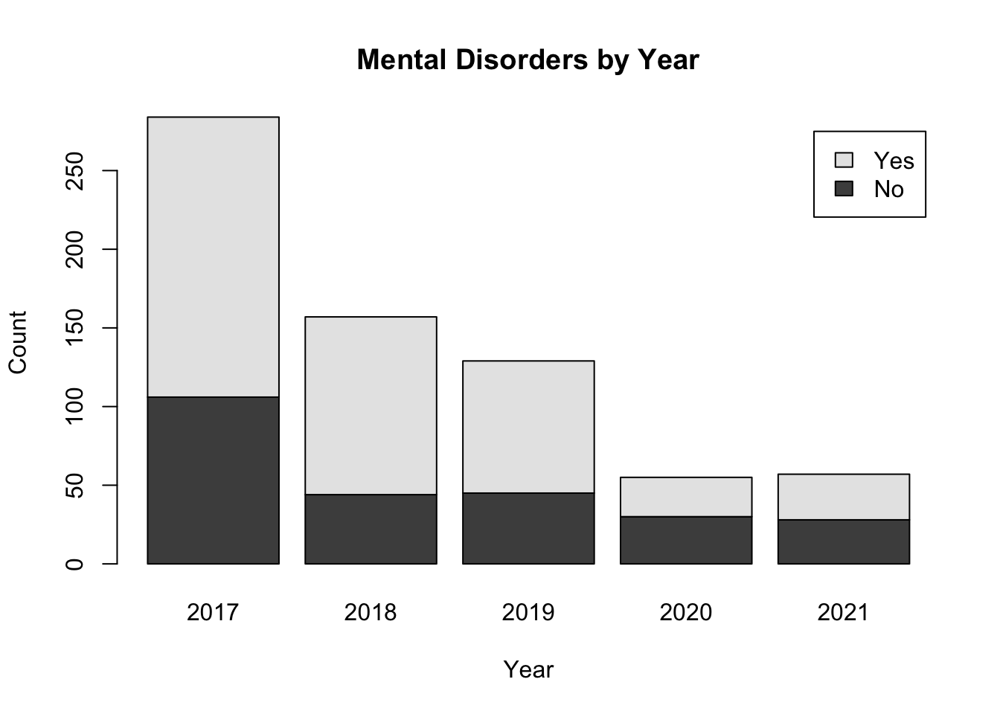

# load neccesary packageslibrary(tidyverse) # used for elementary data wrangling and visualizationlibrary(naniar) # used for missing values visualizationlibrary(summarytools) # used for table summarizing descriptive statisticslibrary(corrplot) # used for correlation plotslibrary(ggridges) # used for joint plotslibrary(boot) # used for the PRESS statisticlibrary(knitr) # used for table with statistics
Introduction
This project is part of University of Massachusetts (UMass) Amherst Data Analytics and Computational Social Science (DACSS) Master’s program. Specifically, this is a final project for the Introduction to Quantitative Analysis class and will focus on analyzing the state of mental health among workers in the technology industry - aka tech - which has been one of the highest employers in the twenty-first century. Not only that, but it has been praised for having some of the happiest workers12.
What has made the tech industry so appealing? A case study on Google published in the International Journal of Corporate Social Responsibility in 20173 points to several elements that make high-tech unique, such as having a distinct culture proposition, aligning individual behaviors to company-wide goals, having managers be coaches rather than bosses, and being able to interact with people from other cultures.
Evidently, Google is one-in-a-million tech company, but there are certainly commonalities shared with smaller new tech (startup) companies. Culture Amp, a company focused on surveying employees in startups, elaborated an analysis based on their results from 2015-2020 surveys4 and mention that elements such as an open and honest two-way communication, workplace flexibility, and fair division of workload, are what make new tech companies valued.
However, the previous data omits the downsides of such cultures. Besides the multiple blog posts and news articles one can find talking about burnout5, the darker side of tech also includes (but is not limited to) ageism6, gender inequality78, and even migration issues910.
Additionally, a survey lead by Blind in 202111 found that, out of 2400 workers in tech, 64% said their mental health is worse after the pandemic. What’s more, layoffs by the thousands, plummeting stock prices, and generalized revaluation of an entire industry’s value, are just few words that can describe what has happened to tech in 2022 and 2023. An industry that once employed over 5 million people in the US alone12 and had nearly 700 billion dollars in funding worldwide13 has now laid off over 300 thousand people14 and nearly halved in funding.
Research Question
It is reasonable to hypothesize that the aforementioned events will take a toll on the workers of this industry, but what has been the actual mental health state of the actors involved?
Research Question
What is the trend in mental health issues among workers in the technology industry from 2017 to 2021, as measured by survey data, and what factors may contribute to these changes?
Hypotheses
Based on the present research question, on previous studies, and on feedback received throughout this course, I have removed two null hypotheses (which were the counterpart of the alternative hypotheses). This has been enacted to strengthen the argument made in the analysis. Additionally, the independent variables have been reduced (leaving the rest of the variables as possible confounders).
Hypotheses
H1: There has been an increase in the prevalence of mental health issues among workers in the technology industry from 2017 to 2021.
H2: The presence of mental health issues among workers in the technology industry from 2017 to 2021 is related to level of support provided by the employer.
Descriptive Statistics
To analyze the state of mental health and the contributing factors, I will rely on data provided by the Open Sourcing Mental Health (OSMH), specifically using their Mental Health in Tech Survey.
OSMH15 is a non-profit dedicated to raising awareness, educating, and providing resources to support mental wellness in the tech and open source communities. It began operations in 2013 and since 2014 it has conducted and published an annual or bi-annual survey analyzing several mental health indicators.
As of May 19, 2023, the 2022 survey has not yet been published. Therefore, this analysis employs historical data, specifically utilizing surveys conducted from 2017 through 2021. All datasets are publicly available on OSMH’s website or on Kaggle.
Below you can find the offline (Microsoft Excel) and online (R) preprocessing steps taken, as well as a snippet of the resulting dataframe. It is worth noting that the preprocessing includes converting certain variables (such as number of employees) to ordinal variables as well as creating an important net-new variable (which will be explained later on).
Offline edits made on the raw files
A “year” column was added to differentiate between both files.
Data pertaining to insurance information (e.g., “Does you company provide a mental health insurance plan?”) was removed because in the 2019 it was optional and was, therefore, almost entirely blank.
Both files contained columns pertaining to the mental disorder each respondent may or may not have. However, these columns were inconsistent and could not be interpreted without making assumptions which may lead to an incorrect interpretation of the data. For that reason, these columns were removed.
The raw data files followed a title case naming convention (e.g., “Does your employer provide mental health resources?”). All column names were changed to a snake_case format (e.g., “employer_provides_mental_health_resources”).
The rest of the columns and data therein contained is left as is.
Code
## ONLINE EDITS MADE ON THE CONSOLIDATED FILE# temporarily set working directory to read in datasetwd("/Users/macuriels/Documents/Umass/umass_dacss_quantitativeanalysis/posts/_data")# read in consolidated file with 2017-2021 datadf <-read_csv("mhit.csv")# create new dataframe with columns of interestdf <- df |>select( year ,has_mental_disorder ,age ,gender ,willingness_to_share_with_friends ,number_of_employees ,company_provides_mhcare ,easy_to_leave_for_mhcare ,comfortable_talking_to_supervisor ,employer_mh_importance ,employer_offers_mhresources )# leave only responses of interest within the dependent variabledf <-subset(df, has_mental_disorder %in%c("Yes", "No"))# treating inconsistent gender naming conventionsdf$gender <-ifelse(grepl("female", df$gender, ignore.case =TRUE), "NonMale" ,ifelse(grepl("male", df$gender, ignore.case =TRUE), "Male" ,"NonMale"))# order company size by employee countdf$number_of_employees <-factor(df$number_of_employees , levels=c("1-5" ,"6-25" ,"26-100" ,"100-500" ,"500-1000" ,"More than 1000"))# convert dependent variable to a factordf$has_mental_disorder <-factor(df$has_mental_disorder)# convert some columns to numericdf$age <-as.numeric(df$age)df$willingness_to_share_with_friends <-as.numeric(df$willingness_to_share_with_friends)# remove respondents under 18df <- df[df$age >18,]# remove respondents over 90df <- df[df$age <90,]# remove rows with missing valuesdf <- df[complete.cases(df),]# remove columns with missing valuesdf <- df[,colSums(is.na(df)) ==0]# remove "I don't know" and "Not eligible for coverage" in column of interestdf <-subset(df, company_provides_mhcare !="I don't know"& company_provides_mhcare !="Not eligible for coverage")# remove "I don't know" from column of interestdf <-subset(df, employer_offers_mhresources !="I don't know")# temp calculation for employer_mh_importance variabledf$employer_mh_importance_calc <-as.numeric(df$employer_mh_importance) *2# temp calculation for comfortable_talking_to_supervisor variable## use ifelse() to recode the values of the columndf$comfortable_talking_to_supervisor_calc <-as.numeric(ifelse(df$comfortable_talking_to_supervisor =="Yes", 1, ifelse(df$comfortable_talking_to_supervisor =="No", 0, 0.5))) *20# temp calculation for employer_offers_mhresources variable## use ifelse() to recode the values of the columndf$employer_offers_mhresources_calc <-as.numeric(ifelse(df$employer_offers_mhresources =="Yes", 1, 0)) *20# temp calculation for easy_to_leave_for_mhcare variable## convert easy to leave for mental health care to numerical categoriesdf$easy_to_leave_for_mhcare_calc <-as.numeric(factor( df$easy_to_leave_for_mhcare ,levels =c("Very easy" ,"Somewhat easy" ,"Neither easy nor difficult" ,"I don't know" ,"Somewhat difficult" ,"Difficult" ) , labels =c(20 ,15 ,10 ,10 ,5 ,0)))# temp calculation for company_provides_mhcare variabledf$company_provides_mhcare_calc <-as.numeric(ifelse(df$company_provides_mhcare =="Yes", 1, 0)) *20# create new dependent columndf$mh_support_factors <-rowSums(df[, c('employer_mh_importance_calc' ,'easy_to_leave_for_mhcare_calc' ,'company_provides_mhcare_calc' ,'employer_offers_mhresources_calc' ,'comfortable_talking_to_supervisor_calc' )], na.rm =TRUE)# Remove temp columns that end in "_calc"df <-select(df, -ends_with("_calc"))# export resulting dataframe to csvwrite.csv(df, file ="df.csv")# Generate a random sample of the dataframesample_df <- df %>%sample_n(5)# print a preview of the table using kable()sample_df %>%head(5) %>%kable()
year
has_mental_disorder
age
gender
willingness_to_share_with_friends
number_of_employees
company_provides_mhcare
easy_to_leave_for_mhcare
comfortable_talking_to_supervisor
employer_mh_importance
employer_offers_mhresources
mh_support_factors
2020
Yes
59
Male
9
26-100
Yes
Neither easy nor difficult
Maybe
6
Yes
65
2019
No
36
Male
8
More than 1000
Yes
Very easy
Yes
8
Yes
77
2017
No
32
Male
7
26-100
No
Somewhat easy
No
6
No
14
2018
Yes
27
NonMale
8
6-25
Yes
Neither easy nor difficult
Maybe
3
No
39
2017
Yes
38
Male
10
More than 1000
Yes
Very easy
Yes
4
No
49
To close this section, below we will use the dfSummary function from the summarytools library to recap the distribution of responses across all columns of the dataframe:
Code
## SUMMARY OF THE RESULTING DATAFRAMEdfSummary(df)
In the following section, plots will be included to further explore and describe the dataset.
Starting off with a plot visualizing the dependent variable distribution, we can see that we are dealing with a binary (categorical) variable where participants indicate whether they have mental disorders or not - and approximately 67% of them say they do have a mental disorder.
Code
# bar plot of dependent variableggplot(data =data.frame(Category =names(table(df$has_mental_disorder)) , Count =as.numeric(table(df$has_mental_disorder))) , aes(x = Category, y = Count)) +geom_bar(stat ="identity") +labs(title ="Participants with Mental Disorders")
Now we will visualize some of the main variables of interest. The first graph will show the number of responses by year divided by participants’ mental health status. From the graph we can see that the responses decrease significantly year-over-year, but it also seems there are always more people that indicate they have mental disorders versus those that don’t.
Code
# create a contingency table of the datacont_tbl <-table(df$has_mental_disorder, df$year)# create a stacked bar chartbarplot(cont_tbl, beside =FALSE, legend.text =rownames(cont_tbl),main ="Mental Disorders by Year",xlab ="Year", ylab ="Count")

The plot below includes a variable that was not included in the survey, but rather was created in the preprocessing of the data. It is a variable called mh_support_factors, which is on a scale from 0-100, is created by adding five variables from the original surveys, and greater numbers indicate that participants believe their employers provide better mental health support (e.g., they provide mental health insurance, they feel supported by their managers, etcetera). The resulting distribution seems to be somewhat flat, with hints of it being bimodal becausea there is a spike at the lower end of the distribution and then another spik at the higher end of the distribution.
Code
ggplot(data =data.frame(Category =names(table(df$mh_support_factors)) , Count =as.numeric(table(df$mh_support_factors))) , aes(x = Category, y = Count)) +geom_bar(stat ="identity") +labs(title ="Mental Health Support provided by the Employer" ,x ='Level of Support') +scale_x_discrete(breaks =seq(0, 100, 10))
Another interesting thing to observe is the age distribution. From the graphic below we can see that most respondents are in their mid-twenties to late-thirties (which makes sense as this industry is relatively new, it is usually associated with younger people, plus there are records of ageism in said industry).
Code
# create a histogram of the "age" columnhist(df$age ,breaks =100 ,xlab ="Age" ,ylab ="Frequency" ,main ="Age Distribution")
Lastly, we will plot the remaining variables of interest: gender, number of employees, and willingness to share their mental health status with friends. During the preprocessing, gender was divided into male and non-male (to capture sexism relationships) and we can see that their are slightly more males than non-males in the sample. From the number of employees, most respondents work at large enterprises (with more than 1000 employees). And from the willingness to share with friends, most respondents are highly willing (7-10 on a scale of 0-10) to share about their mental health status.
The previous section already alluded to the variables of interest, which are as follows:
Main Variables
DEPENDENT VARIABLE
has_mental_disorder: Do you currently have a mental health disorder?
INDEPENDENT VARIABLES
year (for h1): In what year was the survey conducted?
mh_support_factors (for h2): A numerical variable (discrete) with values ranging from 0 to 100, where greater numbers indicate that participants perceive their employers provide more mental health support.
Confounder Variables
CONFOUNDER VARIABLES
age: What is your age?
gender: What is your gender?
willingness_to_share_with_friends: How willing would you be to share with friends and family that you have a mental illness?
number_of_employees: How many employees does your company or organization have?
Testing H1
To answer the first research question - whether there has been an increase in mental health disorders throughout the years - we can run a Chi-squared test of independence. This will allow us to test whether there is an association between two variables (year and mental disorders) in the population.
The test is conducted by comparing the observed frequencies of the data to the expected frequencies and it assumes that data is independent and that the expected frequencies are not too small (as a rule of thumb, no cell of the contingency table should have less than 5 observations).
The results of the Chi-squared test indicate a statistically significant association between the two variables - year and mental disorders. This suggests that the prevalence of mental disorders among mental health workers varies significantly across different years.
What’s interesting is that some years show a higher proportion of mental disorders, while other years have a higher proportion of individuals without mental disorders. While the test does not provide information on the direction or nature of this variation, it does imply that the observed variation is unlikely due to chance alone.
Testing H2
The second hypothesis does not pertain to mental health over the years; rather, it seeks to inquire whether the level of mental health support provided by employers is associated to mental disorders. Since we are dealing with a binary categorical variable (mental disorders = yes/no) and a numerical discrete variable (mental health support factors= 0-100), a logistic regression model can help test this hypothesis.
A logistic regression uses the logistic function to estimate the probability of the binary response variable taking on a certain value given the values of the predictor variables. Additionally, we first experiment the model’s performance with a single predictor variable, and we will then include control variables to compare the models.
Call:
glm(formula = has_mental_disorder ~ mh_support_factors, family = binomial(link = "logit"),
data = df)
Deviance Residuals:
Min 1Q Median 3Q Max
-1.5242 -1.3455 0.8951 0.9653 1.1136
Coefficients:
Estimate Std. Error z value Pr(>|z|)
(Intercept) 0.144042 0.190507 0.756 0.450
mh_support_factors 0.007832 0.003564 2.198 0.028 *
---
Signif. codes: 0 '***' 0.001 '**' 0.01 '*' 0.05 '.' 0.1 ' ' 1
(Dispersion parameter for binomial family taken to be 1)
Null deviance: 899.52 on 681 degrees of freedom
Residual deviance: 894.68 on 680 degrees of freedom
AIC: 898.68
Number of Fisher Scoring iterations: 4
Code
# create a new column with the count of each combination of x and y valuesdf <- df %>%group_by(mh_support_factors, has_mental_disorder) %>%mutate(count =n()) %>%ungroup()# create the plot with the logistic regression line and data pointsggplot(df, aes(x = mh_support_factors, y = has_mental_disorder, size = count)) +geom_point() +scale_size_area(max_size =10) +# adjust the maximum size of the pointsstat_smooth(method ="glm", method.args =list(family="binomial")) +xlab("Mental health support factors in tech") +ylab("Presence of mental disorder") +guides(size=FALSE)
The associated p-value (.028) suggests that there is a statistically significant association between the level of mental health support provided by employers and the presence of mental health issues among the individuals in the dataset. This suggests that the level of mental health support provided by employers has a meaningful impact on the likelihood of individuals experiencing mental health issues.
However, from the plot, we do not see the expected sigmoidal relationship. This could not be due to missing data (because there is none), and it is unlikely that it is due to outliers (because there are not many), therefore this most likely suggests that there is either a nonlinear relationship or that there might be interaction effects.
Model Comparisons
To see whether interaction effects play a role in the previous relationships, I developed a new model which includes also includes the following dependent variables: gender, whether participants are willing to share their mental health status with friends, and the number of employees of a company.
Below is the code used to generate the enhanced model and its summary.
Call:
glm(formula = has_mental_disorder ~ mh_support_factors * gender +
willingness_to_share_with_friends + number_of_employees +
age, family = binomial(link = "logit"), data = df)
Deviance Residuals:
Min 1Q Median 3Q Max
-1.9660 -1.1905 0.7204 0.9397 1.5584
Coefficients:
Estimate Std. Error z value Pr(>|z|)
(Intercept) -1.015686 0.672170 -1.511 0.131
mh_support_factors -0.001631 0.005096 -0.320 0.749
genderNonMale 0.492817 0.414279 1.190 0.234
willingness_to_share_with_friends 0.174225 0.031983 5.447 5.11e-08 ***
number_of_employees6-25 0.617222 0.546092 1.130 0.258
number_of_employees26-100 0.219476 0.533643 0.411 0.681
number_of_employees100-500 0.718551 0.528643 1.359 0.174
number_of_employees500-1000 0.197141 0.578709 0.341 0.733
number_of_employeesMore than 1000 0.717553 0.523203 1.371 0.170
age -0.011886 0.010522 -1.130 0.259
mh_support_factors:genderNonMale 0.002874 0.007669 0.375 0.708
---
Signif. codes: 0 '***' 0.001 '**' 0.01 '*' 0.05 '.' 0.1 ' ' 1
(Dispersion parameter for binomial family taken to be 1)
Null deviance: 899.52 on 681 degrees of freedom
Residual deviance: 841.26 on 671 degrees of freedom
AIC: 863.26
Number of Fisher Scoring iterations: 4
With the above model we can see that the original explanatory variable (mh_support_factors) ceases to be statistically significant. In actuality, with this new model, most variables are irrelevant - all but willingness to share with friends. This suggests that there is a strong relationship between the willingness to talk about one’s mental health and the presence of mental disorders.
Now we will run some additional metrics to compare both models.
Code
# function to calculate mean of the PRESS statisticmean_delta <-sapply(list(log_simple, log_interaction), function(model) {cv.glm(df, model, K =nrow(df))$delta[1]})# create a data frame with the metricsmetrics_df <-data.frame(Model =c("Simple Logistic Regression", "Logistic Regression w/Interactions"),AIC =c(AIC(log_simple), AIC(log_interaction)),BIC =c(BIC(log_simple), BIC(log_interaction)),PRESS = mean_delta)# print the table using kable()kable(metrics_df, caption ="Model Evaluation Metrics")
Model Evaluation Metrics
Model
AIC
BIC
PRESS
Simple Logistic Regression
898.6769
907.7270
0.2330125
Logistic Regression w/Interactions
863.2633
913.0386
0.2211524
As we can see, the statistics suggest that no model is ideal (i.e., the numbers are high) and when it is a mixed bag when it comes to determining which model is better. The adjusted R-squared was not added as it yielded null results, which is likely due to there being multicollinearity among the predictors.
From the statistics used, the Akaike Information Criterion (AIC) and the Bayesian Information Criterion (BIC) measure goodness of fit, and the Predicted Residual Sum of Squares (PRESS) measures the ability to predict on new data. In all cases, lower numbers are better, and the model with interactions performed better on the AIC and the PRESS statistic, but the model without interaction performed better on the BIC statistic. This suggests that the model without interaction has a better balance between fit and complexity (which makes sense as it is simpler) while the model with interactions has a better performance between fit and predictive performance.
As with any modeling decision, choosing among them depends on the use case. If we wanted to have better predictions, the model with interactions would be the way to go (in real life, this makes sense, as mental health is nuanced and is influenced by multiple factors). On the other hand, if we want to pave the way for future research and communicate findings in a simple way, the model without interactions could be a better choice (we could say, for example, that there is a strong relationship between company policies and mental disorders, but that further research is entailed).
Diagnostics
Given the previous situation - choosing between a simpler model or a more complex one - I opt to diagnose the model without interactions.
Residuals vs Fitted: Even though there is a slight pattern in the data (as denoted by the curvature of the red line), we can say it is reasonably linear. This suggests that the model is capturing most - but not all - of the relationship.
Normal Q-Q: The data points mostly depart from the dotted line, which would be a violation of the assumption of normality and could be due to various reasons, including heavy tails in the distribution or non-linear relationships.
Scale-Location: The red line forms roughly a red line, meaning there is no heteroscedasticity and the assumption is constant variance is likely not violated.
Residuals vs Leverage: Even though the data somewhat strays away from the red line, it does not seem to cross the dotted line. This suggests that there are no notable outliers in the data.
Conclusion
The results for both hypotheses were statistically significant, meaning that 1) mental disorders among workers in tech have varied significantly over the years and 2) the level of support provided by employers seems to play an important role in the presence of mental health issues among workers in tech.
That said, I advise caution before jumping to any conclusions. For starters, the underlying dataset is not of the highest quality - it is distributed online with seemingly little control over the sampling, most responses admit open-field text which requires additional cleansing and assumptions, and responses have steadily decreased over the years which may or may not influence the quality of the data being received.
Related to making assumptions of the data, an important net-new variable was created based on already dubious data. If the quality of the underlying data is debatable, it is likely the end result is equally debatable. Furthermore, the net-new variable was created using arbitrary scores which is also worth thinking about.
Lastly, on the modeling side, the decision was to use a logistic regression model, but the topic at hand is mental health which is nuanced in nature and can hardly be classified on a binary basis. Even though the model was statistically significant, a more realistic approach would be to rely on multiple predictor variables (including expert opinions on a diagnosis, not only self-reported measures) and on varying degrees of mental disorders as the outcome variable.
Footnotes
Fox, M. (2016, November 11). Why Are Tech Workers So Satisfied With Their Jobs? Retrieved March 17, 2023, from https://www.forbes.com/sites/meimeifox/2016/11/11/why-are-tech-workers-so-satisfied-with-their-jobs/?sh=4eac1918a059↩︎
Wronski, L., & Cohen, J. (2019, November 4). This is the industry sector that has some of the happiest workers in America. Retrieved March 17, 2023, from https://www.cnbc.com/2019/11/04/this-is-the-industry-that-has-some-of-the-happiness-workers-in-america.html↩︎
Kim, K. T. (2017). GOOGLE: A reflection of culture, leader, and management. International Journal of Corporate Social Responsibility, 2(10). https://doi.org/10.1186/s40991-017-0021-0↩︎
McPherson, J. (n.d.). Tech company cultures are not all the same. Culture Amp. Retrieved March 17, 2023, from https://www.cultureamp.com/blog/tech-company-culture↩︎
Goncharov, A. (2023, March 13). How I burnt out in FAANG, but my job was not the problem. Blog.Goncharov.ai. Retrieved March 17, 2023, from https://blog.goncharov.ai/how-i-burnt-out-in-faang-but-my-job-was-not-the-problem↩︎
Rosales, A., & Jakob, S. (2021). Perceptions of age in contemporary tech. Sciendo, 42(1), 79-91. https://doi.org/10.2478/nor-2021-0021↩︎
Mickey, E. L. (2021). The Organization of Networking and Gender Inequality in the New Economy: Evidence from the Tech Industry. Work & Occupations, 49(4), 383-420. https://doi.org/10.1177/07308884221102134↩︎
Hardey, M. (2020). The Culture of Women in Tech : An Unsuitable Job for a Woman (1st ed.). Emerald Publishing.↩︎
Banerjee, P., & Rincón, L. (2019). Trouble in Tech Paradise. Journal of Water Resources Planning & Management, 145(4), 24-29. https://doi.org/10.1177/1536504219854714↩︎
Matloff, N. (2013). Immigration and the tech industry: As a labour shortage remedy, for innovation, or for cost savings? Migration Letters, 10(2), 210-227. ISSN: 1741-8984 Online ISSN: 1741-8992↩︎
Blind (2021, January 29). Deteriorating Mental Health In The Workplace. Retrieved March 17, 2023, from https://www.teamblind.com/blog/index.php/2021/01/29/deteriorating-mental-health-in-the-workplace/↩︎
The United States Bureau of Labor and Statistics via CompTIA (2023, March 3). Cyberstates 2021: The Definitive Guide to the Tech Industry and Workforce. Retrieved March 17, 2023, from https://www.comptia.org/content/tech-jobs-report↩︎
Crunchbase News. (2023, January 5). Global VC Funding on a Slide since Q4 2022. Retrieved March 17, 2023, from https://news.crunchbase.com/venture/global-vc-funding-slide-q4-2022↩︎
Layoffs.fyi. (n.d.). Layoffs.fyi - Tracking all tech startup layoffs since COVID-19. https://layoffs.fyi↩︎
Open Sourcing Mental Health (n.d.). About OSMH. Retrieved March 18, 2023, from https://osmhhelp.org/about/about-osmi.html↩︎
Source Code
---title: "Final Project Write Up"author: "Miguel Curiel"description: "Mental Health Among Workers in the Tech Industry"date: "05/20/2023"format: html: toc: true code-fold: true code-copy: true code-tools: truecategories: - final project - mental health - tech industry---```{r setup, include=FALSE}knitr::opts_chunk$set(warning =FALSE, message =FALSE) ``````{r, eval=TRUE}# load neccesary packageslibrary(tidyverse) # used for elementary data wrangling and visualizationlibrary(naniar) # used for missing values visualizationlibrary(summarytools) # used for table summarizing descriptive statisticslibrary(corrplot) # used for correlation plotslibrary(ggridges) # used for joint plotslibrary(boot) # used for the PRESS statisticlibrary(knitr) # used for table with statistics```# IntroductionThis project is part of University of Massachusetts (UMass) Amherst Data Analytics and Computational Social Science (DACSS) Master's program. Specifically, this is a final project for the Introduction to Quantitative Analysis class and will focus on **analyzing the state of mental health among workers in the technology industry** - aka tech - which has been one of the highest employers in the twenty-first century. Not only that, but it has been praised for having some of the happiest workers[^1][^2].[^1]: Fox, M. (2016, November 11). *Why Are Tech Workers So Satisfied With Their Jobs?* Retrieved March 17, 2023, from https://www.forbes.com/sites/meimeifox/2016/11/11/why-are-tech-workers-so-satisfied-with-their-jobs/?sh=4eac1918a059[^2]: Wronski, L., & Cohen, J. (2019, November 4). *This is the industry sector that has some of the happiest workers in America*. Retrieved March 17, 2023, from https://www.cnbc.com/2019/11/04/this-is-the-industry-that-has-some-of-the-happiness-workers-in-america.htmlWhat has made the tech industry so appealing? A case study on Google published in the International Journal of Corporate Social Responsibility in 2017[^3] points to several elements that make high-tech unique, such as having a distinct culture proposition, aligning individual behaviors to company-wide goals, having managers be coaches rather than bosses, and being able to interact with people from other cultures.[^3]: Kim, K. T. (2017). GOOGLE: A reflection of culture, leader, and management. *International Journal of Corporate Social Responsibility*, *2*(10). https://doi.org/10.1186/s40991-017-0021-0Evidently, Google is one-in-a-million tech company, but there are certainly commonalities shared with smaller new tech (startup) companies. Culture Amp, a company focused on surveying employees in startups, elaborated an analysis based on their results from 2015-2020 surveys[^4] and mention that elements such as an open and honest two-way communication, workplace flexibility, and fair division of workload, are what make new tech companies valued.[^4]: McPherson, J. (n.d.). *Tech company cultures are not all the same*. Culture Amp. Retrieved March 17, 2023, from https://www.cultureamp.com/blog/tech-company-cultureHowever, the previous data omits the downsides of such cultures. Besides the multiple blog posts and news articles one can find talking about burnout[^5], the darker side of tech also includes (but is not limited to) ageism[^6], gender inequality[^7][^8], and even migration issues[^9][^10].[^5]: Goncharov, A. (2023, March 13). *How I burnt out in FAANG, but my job was not the problem*. Blog.Goncharov.ai. Retrieved March 17, 2023, from https://blog.goncharov.ai/how-i-burnt-out-in-faang-but-my-job-was-not-the-problem[^6]: Rosales, A., & Jakob, S. (2021). Perceptions of age in contemporary tech. *Sciendo*, *42*(1), 79-91. https://doi.org/10.2478/nor-2021-0021[^7]: Mickey, E. L. (2021). The Organization of Networking and Gender Inequality in the New Economy: Evidence from the Tech Industry. *Work & Occupations*, *49*(4), 383-420. https://doi.org/10.1177/07308884221102134[^8]: Hardey, M. (2020). *The Culture of Women in Tech : An Unsuitable Job for a Woman* (1st ed.). Emerald Publishing.[^9]: Banerjee, P., & Rincón, L. (2019). Trouble in Tech Paradise. *Journal of Water Resources Planning & Management*, *145*(4), 24-29. https://doi.org/10.1177/1536504219854714[^10]: Matloff, N. (2013). Immigration and the tech industry: As a labour shortage remedy, for innovation, or for cost savings? *Migration Letters*, *10*(2), 210-227. ISSN: 1741-8984 Online ISSN: 1741-8992Additionally, a survey lead by Blind in 2021[^11] found that, out of 2400 workers in tech, 64% said their mental health is worse after the pandemic. What's more, layoffs by the thousands, plummeting stock prices, and generalized revaluation of an entire industry's value, are just few words that can describe what has happened to tech in 2022 and 2023. An industry that once employed over 5 million people in the US alone[^12] and had nearly 700 billion dollars in funding worldwide[^13] has now laid off over 300 thousand people[^14] and nearly halved in funding.[^11]: Blind (2021, January 29). *Deteriorating Mental Health In The Workplace*. Retrieved March 17, 2023, from https://www.teamblind.com/blog/index.php/2021/01/29/deteriorating-mental-health-in-the-workplace/[^12]: The United States Bureau of Labor and Statistics via CompTIA (2023, March 3). *Cyberstates 2021: The Definitive Guide to the Tech Industry and Workforce*. Retrieved March 17, 2023, from https://www.comptia.org/content/tech-jobs-report[^13]: Crunchbase News. (2023, January 5). *Global VC Funding on a Slide since Q4 2022*. Retrieved March 17, 2023, from https://news.crunchbase.com/venture/global-vc-funding-slide-q4-2022[^14]: Layoffs.fyi. (n.d.). *Layoffs.fyi - Tracking all tech startup layoffs since COVID-19*. https://layoffs.fyi------------------------------------------------------------------------# Research QuestionIt is reasonable to hypothesize that the aforementioned events will take a toll on the workers of this industry, but what has been the actual mental health state of the actors involved?::: callout-tip## Research QuestionWhat is the trend in mental health issues among workers in the technology industry from 2017 to 2021, as measured by survey data, and what factors may contribute to these changes?:::------------------------------------------------------------------------# HypothesesBased on the present research question, on previous studies, and on feedback received throughout this course, I have removed two null hypotheses (which were the counterpart of the alternative hypotheses). This has been enacted to strengthen the argument made in the analysis. Additionally, the independent variables have been reduced (leaving the rest of the variables as possible confounders).::: callout-tip## Hypotheses- H1: There has been an increase in the prevalence of mental health issues among workers in the technology industry from 2017 to 2021.- H2: The presence of mental health issues among workers in the technology industry from 2017 to 2021 is related to level of support provided by the employer.:::------------------------------------------------------------------------# Descriptive StatisticsTo analyze the state of mental health and the contributing factors, I will rely on data provided by the Open Sourcing Mental Health (OSMH), specifically using their Mental Health in Tech Survey.OSMH[^15] is a non-profit dedicated to raising awareness, educating, and providing resources to support mental wellness in the tech and open source communities. It began operations in 2013 and since 2014 it has conducted and published an annual or bi-annual survey analyzing several mental health indicators.[^15]: Open Sourcing Mental Health (n.d.). *About OSMH*. Retrieved March 18, 2023, from https://osmhhelp.org/about/about-osmi.htmlAs of May 19, 2023, the 2022 survey has not yet been published. Therefore, this analysis employs historical data, specifically utilizing surveys conducted from 2017 through 2021. All datasets are publicly available on OSMH's [website](https://osmhhelp.org/research.html) or on [Kaggle](https://www.kaggle.com/osmihelp/datasets).Below you can find the offline (Microsoft Excel) and online (R) preprocessing steps taken, as well as a snippet of the resulting dataframe. It is worth noting that the preprocessing includes converting certain variables (such as number of employees) to ordinal variables as well as creating an important net-new variable (which will be explained later on).::: {.callout-note collapse="true"}## Offline edits made on the raw files- A "year" column was added to differentiate between both files.- Data pertaining to insurance information (e.g., "Does you company provide a mental health insurance plan?") was removed because in the 2019 it was optional and was, therefore, almost entirely blank.- Both files contained columns pertaining to the mental disorder each respondent may or may not have. However, these columns were inconsistent and could not be interpreted without making assumptions which may lead to an incorrect interpretation of the data. For that reason, these columns were removed.- The raw data files followed a title case naming convention (e.g., "Does your employer provide mental health resources?"). All column names were changed to a snake_case format (e.g., "employer_provides_mental_health_resources").- The rest of the columns and data therein contained is left as is.:::```{r, eval=TRUE, echo=TRUE}## ONLINE EDITS MADE ON THE CONSOLIDATED FILE# temporarily set working directory to read in datasetwd("/Users/macuriels/Documents/Umass/umass_dacss_quantitativeanalysis/posts/_data")# read in consolidated file with 2017-2021 datadf <-read_csv("mhit.csv")# create new dataframe with columns of interestdf <- df |>select( year ,has_mental_disorder ,age ,gender ,willingness_to_share_with_friends ,number_of_employees ,company_provides_mhcare ,easy_to_leave_for_mhcare ,comfortable_talking_to_supervisor ,employer_mh_importance ,employer_offers_mhresources )# leave only responses of interest within the dependent variabledf <-subset(df, has_mental_disorder %in%c("Yes", "No"))# treating inconsistent gender naming conventionsdf$gender <-ifelse(grepl("female", df$gender, ignore.case =TRUE), "NonMale" ,ifelse(grepl("male", df$gender, ignore.case =TRUE), "Male" ,"NonMale"))# order company size by employee countdf$number_of_employees <-factor(df$number_of_employees , levels=c("1-5" ,"6-25" ,"26-100" ,"100-500" ,"500-1000" ,"More than 1000"))# convert dependent variable to a factordf$has_mental_disorder <-factor(df$has_mental_disorder)# convert some columns to numericdf$age <-as.numeric(df$age)df$willingness_to_share_with_friends <-as.numeric(df$willingness_to_share_with_friends)# remove respondents under 18df <- df[df$age >18,]# remove respondents over 90df <- df[df$age <90,]# remove rows with missing valuesdf <- df[complete.cases(df),]# remove columns with missing valuesdf <- df[,colSums(is.na(df)) ==0]# remove "I don't know" and "Not eligible for coverage" in column of interestdf <-subset(df, company_provides_mhcare !="I don't know"& company_provides_mhcare !="Not eligible for coverage")# remove "I don't know" from column of interestdf <-subset(df, employer_offers_mhresources !="I don't know")# temp calculation for employer_mh_importance variabledf$employer_mh_importance_calc <-as.numeric(df$employer_mh_importance) *2# temp calculation for comfortable_talking_to_supervisor variable## use ifelse() to recode the values of the columndf$comfortable_talking_to_supervisor_calc <-as.numeric(ifelse(df$comfortable_talking_to_supervisor =="Yes", 1, ifelse(df$comfortable_talking_to_supervisor =="No", 0, 0.5))) *20# temp calculation for employer_offers_mhresources variable## use ifelse() to recode the values of the columndf$employer_offers_mhresources_calc <-as.numeric(ifelse(df$employer_offers_mhresources =="Yes", 1, 0)) *20# temp calculation for easy_to_leave_for_mhcare variable## convert easy to leave for mental health care to numerical categoriesdf$easy_to_leave_for_mhcare_calc <-as.numeric(factor( df$easy_to_leave_for_mhcare ,levels =c("Very easy" ,"Somewhat easy" ,"Neither easy nor difficult" ,"I don't know" ,"Somewhat difficult" ,"Difficult" ) , labels =c(20 ,15 ,10 ,10 ,5 ,0)))# temp calculation for company_provides_mhcare variabledf$company_provides_mhcare_calc <-as.numeric(ifelse(df$company_provides_mhcare =="Yes", 1, 0)) *20# create new dependent columndf$mh_support_factors <-rowSums(df[, c('employer_mh_importance_calc' ,'easy_to_leave_for_mhcare_calc' ,'company_provides_mhcare_calc' ,'employer_offers_mhresources_calc' ,'comfortable_talking_to_supervisor_calc' )], na.rm =TRUE)# Remove temp columns that end in "_calc"df <-select(df, -ends_with("_calc"))# export resulting dataframe to csvwrite.csv(df, file ="df.csv")# Generate a random sample of the dataframesample_df <- df %>%sample_n(5)# print a preview of the table using kable()sample_df %>%head(5) %>%kable()```To close this section, below we will use the `dfSummary` function from the `summarytools` library to recap the distribution of responses across all columns of the dataframe:```{r, eval=TRUE, echo=TRUE}## SUMMARY OF THE RESULTING DATAFRAMEdfSummary(df)```------------------------------------------------------------------------# Exploratory Data AnalysisIn the following section, plots will be included to further explore and describe the dataset.Starting off with a plot visualizing the dependent variable distribution, we can see that we are dealing with a binary (categorical) variable where participants indicate whether they have mental disorders or not - and approximately 67% of them say they do have a mental disorder.```{r, eval=TRUE, echo=TRUE}# bar plot of dependent variableggplot(data =data.frame(Category =names(table(df$has_mental_disorder)) , Count =as.numeric(table(df$has_mental_disorder))) , aes(x = Category, y = Count)) +geom_bar(stat ="identity") +labs(title ="Participants with Mental Disorders")```Now we will visualize some of the main variables of interest. The first graph will show the number of responses by year divided by participants' mental health status. From the graph we can see that the responses decrease significantly year-over-year, but it also seems there are always more people that indicate they have mental disorders versus those that don't.```{r, eval=TRUE, echo=TRUE}# create a contingency table of the datacont_tbl <-table(df$has_mental_disorder, df$year)# create a stacked bar chartbarplot(cont_tbl, beside =FALSE, legend.text =rownames(cont_tbl),main ="Mental Disorders by Year",xlab ="Year", ylab ="Count")```The plot below includes a variable that was not included in the survey, but rather was created in the preprocessing of the data. It is a variable called `mh_support_factors`, which is on a scale from 0-100, is created by adding five variables from the original surveys, and greater numbers indicate that participants believe their employers provide better mental health support (e.g., they provide mental health insurance, they feel supported by their managers, etcetera). The resulting distribution seems to be somewhat flat, with hints of it being bimodal becausea there is a spike at the lower end of the distribution and then another spik at the higher end of the distribution.```{r, eval=TRUE, echo=TRUE}ggplot(data =data.frame(Category =names(table(df$mh_support_factors)) , Count =as.numeric(table(df$mh_support_factors))) , aes(x = Category, y = Count)) +geom_bar(stat ="identity") +labs(title ="Mental Health Support provided by the Employer" ,x ='Level of Support') +scale_x_discrete(breaks =seq(0, 100, 10))```Another interesting thing to observe is the age distribution. From the graphic below we can see that most respondents are in their mid-twenties to late-thirties (which makes sense as this industry is relatively new, it is usually associated with younger people, plus there are records of ageism in said industry).```{r, echo=TRUE, eval=TRUE}# create a histogram of the "age" columnhist(df$age ,breaks =100 ,xlab ="Age" ,ylab ="Frequency" ,main ="Age Distribution")```Lastly, we will plot the remaining variables of interest: gender, number of employees, and willingness to share their mental health status with friends. During the preprocessing, gender was divided into male and non-male (to capture sexism relationships) and we can see that their are slightly more males than non-males in the sample. From the number of employees, most respondents work at large enterprises (with more than 1000 employees). And from the willingness to share with friends, most respondents are highly willing (7-10 on a scale of 0-10) to share about their mental health status.```{r, echo=TRUE, eval=TRUE}df_long <-gather(df ,key ="question" ,value ="response" ,gender ,number_of_employees ,willingness_to_share_with_friends )ggplot(df_long, aes(x = response, fill = question)) +geom_bar() +facet_wrap(~ question, scales ="free_x") +labs(title ="Remaining Variables of Interest", x ="Responses", y ="Count") +theme(strip.text =element_text(size =6, face ="bold") , strip.background =element_blank() , panel.spacing =unit(0.2, "cm") , axis.text.x =element_text(angle =45, hjust =1)) +theme(axis.text =element_text(size =6)) +guides(fill ="none")```------------------------------------------------------------------------# Hypotheses TestingThe previous section already alluded to the variables of interest, which are as follows:::: callout-tip## Main Variables- **DEPENDENT VARIABLE** - **has_mental_disorder:** Do you currently have a mental health disorder?- **INDEPENDENT VARIABLES** - **year (for h1)**: In what year was the survey conducted? - **mh_support_factors (for h2):** A numerical variable (discrete) with values ranging from 0 to 100, where greater numbers indicate that participants perceive their employers provide more mental health support.:::::: callout-tip## Confounder Variables- **CONFOUNDER VARIABLES** - **age:** What is your age? - **gender:** What is your gender? - **willingness_to_share_with_friends:** How willing would you be to share with friends and family that you have a mental illness? - **number_of_employees:** How many employees does your company or organization have?:::## Testing H1To answer the first research question - whether there has been an increase in mental health disorders throughout the years - we can run a Chi-squared test of independence. This will allow us to test whether there is an association between two variables (year and mental disorders) in the population.The test is conducted by comparing the observed frequencies of the data to the expected frequencies and it assumes that data is independent and that the expected frequencies are not too small (as a rule of thumb, no cell of the contingency table should have less than 5 observations).```{r, eval=TRUE, echo=TRUE}# print contingency tableprint_table <-function(var1, var2, annotation) {cat(paste0(annotation, "\n"))print(table(df$has_mental_disorder, df$year))}print_table(var1, var2, "Contingency Table")# perform a chi-squared test of independencechisq.test(cont_tbl)```The results of the Chi-squared test indicate a statistically significant association between the two variables - year and mental disorders. **This suggests that the prevalence of mental disorders among mental health workers varies significantly across different years.**What's interesting is that some years show a higher proportion of mental disorders, while other years have a higher proportion of individuals without mental disorders. While the test does not provide information on the direction or nature of this variation, it does imply that the observed variation is unlikely due to chance alone.## Testing H2The second hypothesis does not pertain to mental health over the years; rather, it seeks to inquire whether the level of mental health support provided by employers is associated to mental disorders. Since we are dealing with a binary categorical variable (mental disorders = yes/no) and a numerical discrete variable (mental health support factors= 0-100), a logistic regression model can help test this hypothesis.A logistic regression uses the logistic function to estimate the probability of the binary response variable taking on a certain value given the values of the predictor variables. Additionally, we first experiment the model's performance with a single predictor variable, and we will then include control variables to compare the models.```{r, eval=TRUE, echo=TRUE}# transform no/yes to 0/1df$has_mental_disorder <-ifelse(df$has_mental_disorder =="Yes", 1, 0)# simple log modellog_simple <-glm(has_mental_disorder ~ mh_support_factors ,data = df ,family =binomial(link="logit"))# print model summarysummary(log_simple)``````{r, echo=TRUE, eval=TRUE}# create a new column with the count of each combination of x and y valuesdf <- df %>%group_by(mh_support_factors, has_mental_disorder) %>%mutate(count =n()) %>%ungroup()# create the plot with the logistic regression line and data pointsggplot(df, aes(x = mh_support_factors, y = has_mental_disorder, size = count)) +geom_point() +scale_size_area(max_size =10) +# adjust the maximum size of the pointsstat_smooth(method ="glm", method.args =list(family="binomial")) +xlab("Mental health support factors in tech") +ylab("Presence of mental disorder") +guides(size=FALSE)```The associated p-value (.028) suggests that there is a statistically significant association between the level of mental health support provided by employers and the presence of mental health issues among the individuals in the dataset. This **suggests that the level of mental health support provided by employers has a meaningful impact on the likelihood of individuals experiencing mental health issues**.However, from the plot, we do not see the expected sigmoidal relationship. This could not be due to missing data (because there is none), and it is unlikely that it is due to outliers (because there are not many), therefore this most likely suggests that there is either a nonlinear relationship or that there might be interaction effects.------------------------------------------------------------------------# Model ComparisonsTo see whether interaction effects play a role in the previous relationships, I developed a new model which includes also includes the following dependent variables: gender, whether participants are willing to share their mental health status with friends, and the number of employees of a company.Below is the code used to generate the enhanced model and its summary.```{r, eval=TRUE, echo=TRUE}log_interaction <-glm(has_mental_disorder ~ mh_support_factors * gender + willingness_to_share_with_friends + number_of_employees + age ,data = df ,family =binomial(link="logit"))summary(log_interaction)```With the above model we can see that the original explanatory variable (`mh_support_factors`) ceases to be statistically significant. In actuality, with this new model, most variables are irrelevant - all but willingness to share with friends. This suggests that there is a strong relationship between the willingness to talk about one's mental health and the presence of mental disorders.Now we will run some additional metrics to compare both models.```{r, eval=TRUE, echo=TRUE}# function to calculate mean of the PRESS statisticmean_delta <-sapply(list(log_simple, log_interaction), function(model) {cv.glm(df, model, K =nrow(df))$delta[1]})# create a data frame with the metricsmetrics_df <-data.frame(Model =c("Simple Logistic Regression", "Logistic Regression w/Interactions"),AIC =c(AIC(log_simple), AIC(log_interaction)),BIC =c(BIC(log_simple), BIC(log_interaction)),PRESS = mean_delta)# print the table using kable()kable(metrics_df, caption ="Model Evaluation Metrics")```As we can see, the statistics suggest that no model is ideal (i.e., the numbers are high) and when it is a mixed bag when it comes to determining which model is better. The adjusted R-squared was not added as it yielded null results, which is likely due to there being multicollinearity among the predictors.From the statistics used, the Akaike Information Criterion (AIC) and the Bayesian Information Criterion (BIC) measure goodness of fit, and the Predicted Residual Sum of Squares (PRESS) measures the ability to predict on new data. In all cases, lower numbers are better, and **the model with interactions performed better on the AIC and the PRESS statistic, but the model without interaction performed better on the BIC statistic**. This suggests that the model without interaction has a better balance between fit and complexity (which makes sense as it is simpler) while the model with interactions has a better performance between fit and predictive performance.As with any modeling decision, choosing among them depends on the use case. If we wanted to have better predictions, the model with interactions would be the way to go (in real life, this makes sense, as mental health is nuanced and is influenced by multiple factors). On the other hand, if we want to pave the way for future research and communicate findings in a simple way, the model without interactions could be a better choice (we could say, for example, that there is a strong relationship between company policies and mental disorders, but that further research is entailed).------------------------------------------------------------------------# DiagnosticsGiven the previous situation - choosing between a simpler model or a more complex one - I opt to diagnose the model without interactions.```{r, eval=TRUE, echo=TRUE}# generate diagnostic plotspar(mfrow =c(2, 2))plot(log_simple)```From the plots we can conclude that:- Residuals vs Fitted: Even though there is a slight pattern in the data (as denoted by the curvature of the red line), we can say it is reasonably linear. This suggests that the model is capturing most - but not all - of the relationship.- Normal Q-Q: The data points mostly depart from the dotted line, which would be a violation of the assumption of normality and could be due to various reasons, including heavy tails in the distribution or non-linear relationships.- Scale-Location: The red line forms roughly a red line, meaning there is no heteroscedasticity and the assumption is constant variance is likely not violated.- Residuals vs Leverage: Even though the data somewhat strays away from the red line, it does not seem to cross the dotted line. This suggests that there are no notable outliers in the data.------------------------------------------------------------------------# ConclusionThe results for both hypotheses were statistically significant, meaning that **1) mental disorders among workers in tech have varied significantly over the years and 2) the level of support provided by employers seems to play an important role in the presence of mental health issues among workers in tech.**That said, I advise caution before jumping to any conclusions. For starters, the underlying dataset is not of the highest quality - it is distributed online with seemingly little control over the sampling, most responses admit open-field text which requires additional cleansing and assumptions, and responses have steadily decreased over the years which may or may not influence the quality of the data being received.Related to making assumptions of the data, an important net-new variable was created based on already dubious data. If the quality of the underlying data is debatable, it is likely the end result is equally debatable. Furthermore, the net-new variable was created using arbitrary scores which is also worth thinking about.Lastly, on the modeling side, the decision was to use a logistic regression model, but the topic at hand is mental health which is nuanced in nature and can hardly be classified on a binary basis. Even though the model was statistically significant, a more realistic approach would be to rely on multiple predictor variables (including expert opinions on a diagnosis, not only self-reported measures) and on varying degrees of mental disorders as the outcome variable.